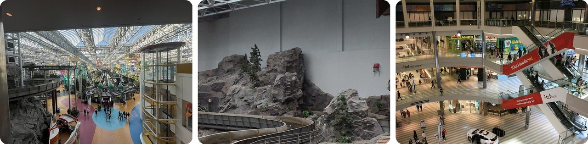
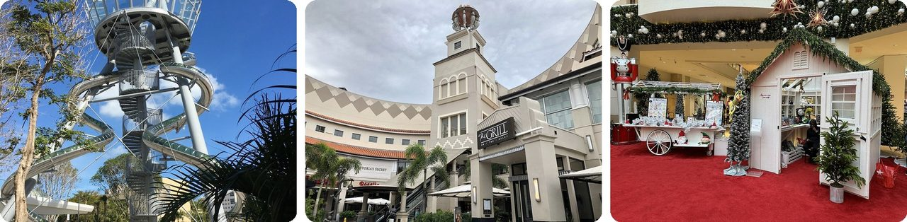
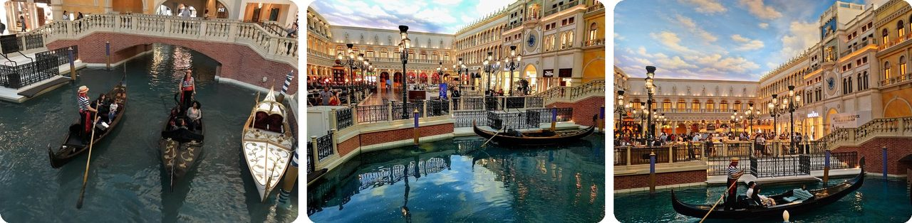
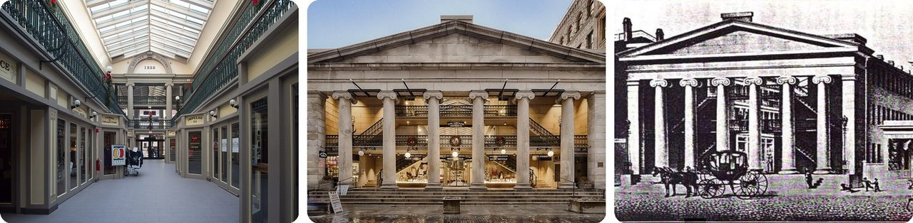
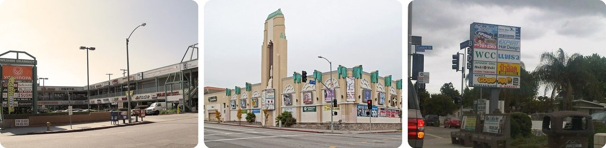

🌍 Top 10 Centres commerciaux des États-Unis, du plus grand au plus petit
25 novembre 2026
1. 🥶 Le Mall of America n'a pas de chauffage dans ses allées

Le Mall of America, à Bloomington, dans le Minnesota, est le plus grand centre commercial des États-Unis : environ 5,7 millions de pieds carrés. Un journal a dit un jour qu'on pourrait y faire tenir sept Yankee Stadiums.Les hivers du Minnesota sont glacials, mais les allées du centre commercial n'ont pas de chauffage. Seules les entrées et quelques zones en sous-sol sont chauffées. Le soleil entre par des verrières, et le reste de la chaleur vient des lampes, des appareils et de tous les gens qui se promènent.
Le centre commercial se trouve à l'endroit d'un ancien stade de baseball. Une plaque dans le sol du parc d'attractions couvert marque l'ancien marbre, la base où se tenait le batteur. Tout en haut d'un mur, un seul siège de stade rouge est vissé là où est tombé le coup de circuit de 520 pieds de Harmon Killebrew en 1967, presque à un terrain de football américain et demi de distance.
En gros, ce sont les clients qui servent de radiateurs.
2. 🎢 L'American Dream du New Jersey a mis 15 ans à ouvrir
 American Dream, à East Rutherford, dans le New Jersey, est le deuxième plus grand centre commercial des États-Unis, avec environ 3 millions de pieds carrés. Le chantier a commencé en 2004, et il a enfin ouvert en 2019. Entre-temps, il a changé plusieurs fois de propriétaire, et les travaux se sont arrêtés et ont repris encore et encore.
American Dream, à East Rutherford, dans le New Jersey, est le deuxième plus grand centre commercial des États-Unis, avec environ 3 millions de pieds carrés. Le chantier a commencé en 2004, et il a enfin ouvert en 2019. Entre-temps, il a changé plusieurs fois de propriétaire, et les travaux se sont arrêtés et ont repris encore et encore.
Le bâtiment à moitié construit était peint de couleurs criardes qu'on voyait depuis l'autoroute. En 2011, le gouverneur du New Jersey, Chris Christie, l'a traité d'« offense pour les yeux » et de bâtiment le plus moche du New Jersey, « et peut-être de l'Amérique ». En 2019, il a enfin été repeint en blanc.
Plus tôt la même année, en février 2011, un mois de neige record est tombé. Des ouvriers essayaient de faire fondre la neige sur le toit de la piste de ski couverte du centre commercial, et la glace accumulée a fait s'effondrer une partie d'un mur. La neige du dehors a abîmé le bâtiment fait pour la neige du dedans.
Autrement dit, le centre commercial le plus lent d'Amérique a aussi eu le moins de chance avec la météo.
3. 🫘 Le plus grand centre commercial de Californie a poussé dans un champ de haricots
 South Coast Plaza, à Costa Mesa, est le plus grand centre commercial de Californie. La famille Segerstrom l'a construit dans un de ses propres champs de haricots de Lima, dans le comté d'Orange, qui grandissait très vite, et il a ouvert en 1967.
South Coast Plaza, à Costa Mesa, est le plus grand centre commercial de Californie. La famille Segerstrom l'a construit dans un de ses propres champs de haricots de Lima, dans le comté d'Orange, qui grandissait très vite, et il a ouvert en 1967.
Contrairement à la plupart des grands centres commerciaux, il n'a jamais été vendu à une grosse société d'investissement. C'est toujours la même famille qui en est propriétaire.
Et il vend énormément. Ses magasins rapportent environ 2,5 milliards de dollars par an, à peu près 7 millions de dollars chaque jour, ce qui en fait le centre commercial qui gagne le plus d'argent aux États-Unis.
Bref, le champ de haricots est devenu un champ de billets.
4. 🛝 Le plus grand centre commercial de Floride a un toboggan qui compte comme une œuvre d'art

Aventura Mall, près de Miami, est le plus grand centre commercial de Floride et le cinquième plus grand des États-Unis. Il expose plus de 25 grandes œuvres d'art un peu partout.La plus célèbre est l'Aventura Slide Tower, un toboggan en spirale de 93 pieds de l'artiste Carsten Höller. C'est à peu près la hauteur d'un immeuble de 9 étages. C'est une œuvre d'art sur laquelle on a le droit de jouer.
Le centre a aussi une aire de jeux conçue comme une œuvre d'art et un Apple Store sur trois niveaux. Les lecteurs de USA Today l'ont élu meilleur centre commercial des États-Unis en 2025 et encore en 2026.
Imagine un musée où tu peux glisser le long de la sculpture.
5. 🎠 Le plus grand centre commercial de l'État de New York a été construit sur une casse
 Destiny USA, à Syracuse, est le plus grand centre commercial de l'État de New York. Avant sa construction, le terrain était une casse appelée Marley Scrap Yard, entourée de pâtés de maisons remplis de réservoirs de pétrole que les gens appelaient « Oil City » (« la ville du pétrole »).
Destiny USA, à Syracuse, est le plus grand centre commercial de l'État de New York. Avant sa construction, le terrain était une casse appelée Marley Scrap Yard, entourée de pâtés de maisons remplis de réservoirs de pétrole que les gens appelaient « Oil City » (« la ville du pétrole »).
Il a d'abord fallu nettoyer le sol pollué, ce qui a retardé les travaux. À son ouverture en 1990, il s'appelait Carousel Center, du nom d'un vrai manège de 1908 qui tourne encore à l'intérieur du centre.
Plus tard, les propriétaires l'ont rebaptisé Destiny USA et l'ont agrandi jusqu'à en faire un géant. En 2021, plus de 26 millions de personnes y venaient chaque année.
Alors un tas de ferraille est devenu l'un des centres commerciaux les plus visités d'Amérique.
6. 🌡️ Le premier centre commercial entièrement couvert a été construit pour le froid du Minnesota
 Southdale Center, à Edina, dans le Minnesota, a ouvert en 1956. C'était le premier centre commercial des États-Unis entièrement fermé et climatisé. Son toit et son système d'air le gardaient à 75 °F toute l'année, comme un jour de printemps même en pleine tempête de neige.
Southdale Center, à Edina, dans le Minnesota, a ouvert en 1956. C'était le premier centre commercial des États-Unis entièrement fermé et climatisé. Son toit et son système d'air le gardaient à 75 °F toute l'année, comme un jour de printemps même en pleine tempête de neige.
Son architecte, Victor Gruen, avait grandi à Vienne et voulait une place de village où les gens boiraient un café et discuteraient. Il imaginait même qu'il y aurait un jour des écoles, un centre médical et des logements.
Tout le monde n'a pas aimé. Le célèbre architecte Frank Lloyd Wright l'a visité et a dit que Gruen « aurait dû laisser le centre-ville au centre-ville ».
Autrement dit, le premier centre commercial couvert est né avec une mauvaise critique.
7. 🛶 Un centre commercial de Las Vegas propose des balades en gondole au premier étage

Les Grand Canal Shoppes se trouvent dans l'hôtel Venetian, à Las Vegas. Tout le centre commercial est au premier étage, au-dessus du casino.Et pourtant, il y a un canal. Des gondoles, les longues barques de Venise, en Italie, promènent les gens devant les boutiques. Le plafond est peint comme un ciel, et la place principale copie la place Saint-Marc de Venise.
Il a ouvert en 1999, mais le premier jour, seulement 16 de ses 72 boutiques et restaurants étaient prêts.
Imagine une balade en bateau sans jamais sortir dehors.
8. 🗿 Des dieux romains robots font le spectacle dans un centre commercial de Las Vegas
 Les Forum Shops du Caesars Palace, à Las Vegas, sont construits sur un terrain qui était autrefois un circuit de course automobile. À l'ouverture en 1992, il y avait un spectacle gratuit toutes les heures : des statues robots parlantes de dieux romains, comme Bacchus et Vénus, dans une fontaine à 4 millions de dollars.
Les Forum Shops du Caesars Palace, à Las Vegas, sont construits sur un terrain qui était autrefois un circuit de course automobile. À l'ouverture en 1992, il y avait un spectacle gratuit toutes les heures : des statues robots parlantes de dieux romains, comme Bacchus et Vénus, dans une fontaine à 4 millions de dollars.
Quand ce spectacle s'est arrêté en 2011, les robots tombaient souvent en panne, et certaines personnes ne comprenaient pas ce qu'ils disaient.
Un autre spectacle de robots, ajouté en 1997, a été rénové en 2013. Dans « La chute de l'Atlantide », les enfants d'un roi se disputent la ville de l'Atlantide jusqu'à ce qu'elle coule, avec du vrai feu et de la vraie eau. Juste à côté, il y a un aquarium de 50 000 gallons avec 500 poissons tropicaux, et en dessous, un atelier où des techniciens font tourner les robots.
Un centre commercial où les statues te répondent.
9. 🏛️ Le premier centre commercial couvert d'Amérique abrite maintenant de minuscules appartements

Le Westminster Arcade, à Providence, dans le Rhode Island, a ouvert en 1828, il y a presque 200 ans. On le présente comme le premier centre commercial couvert des États-Unis : trois étages de petites boutiques sous une longue verrière.Au début, les clients étaient lents à venir, parce qu'il était loin des autres magasins. Les gens l'ont surnommé « Butler's Folly » (« la folie de Butler »), du nom de son constructeur, Cyrus Butler. Les choses n'ont changé que quand une élégante boutique de chapeaux a ouvert juste à côté et a attiré des clients riches.
Ses colonnes de façade mesurent 45 pieds de haut et ont été tirées par des bœufs sur 8 miles de chemins de terre. Depuis 2013, c'est un mélange de boutiques et de micro-lofts, c'est-à-dire de tout petits appartements.
Le plus vieux centre commercial d'Amérique est devenu un endroit où on habite.
10. ⛽ Les mini-malls de Los Angeles ont poussé là où les stations-service ont fermé

Les plus petits centres commerciaux sont les strip malls : une courte rangée de boutiques avec un parking devant. Les plus petits commencent à environ 5 000 pieds carrés, à peu près la taille d'un terrain de basket. Les États-Unis en comptent plus de 68 000.À Los Angeles, on les appelle des mini-malls. En 1973, une crise du pétrole a fait faire faillite à beaucoup de stations-service, ce qui a laissé des terrains vides au coin des rues un peu partout dans la ville. Des promoteurs y ont construit quelques boutiques et un petit parking.
Le premier mini-mall moderne a ouvert cette année-là à Panorama City, et plus de 600 ont suivi. Il y en a eu tellement qu'en 1988, Los Angeles a adopté une règle pour les limiter.
Tout un centre commercial là où il n'y avait qu'une pompe à essence.
Le saviez-vous ?
Avant de construire le Mall of America, ses promoteurs avaient d'abord imaginé un lac couvert géant au même endroit, avec des vagues de 6 pieds pour surfer à l'intérieur et des sous-marins pour montrer la vie marine aux visiteurs. Ce projet a été abandonné. Des dizaines d'années plus tard, la même entreprise a prévu le parc aquatique d'American Dream autour de ce qui serait la plus grande piscine à vagues couverte du monde, d'environ 1,5 acre et 1,5 million de gallons d'eau. Les faux océans, les vagues fabriquées par l'homme et les plages couvertes du monde entier sont tout un univers à explorer la prochaine fois.
Crédits photo (Wikimedia Commons)
- #1: Mall of America Nickelodeon Universe Second Floor Wide.jpg by AdaLovelaceHackermode, CC0
- #1: MOA Killebrew chair1.JPG by Wahkeenah at English Wikipedia, Public domain
- #1: Mall of America Floors & Escalators.jpg by Tyler Vigen, CC BY 4.0
- #2: American Dream Mall, Drone Aerial at NJ-3 (May 2026).jpg by MiracleMiles, CC BY 4.0
- #2: Meadowlands Xanadu Exterior (flickr) by LancerE, CC BY 2.0
- #2: The Rink in the American Dream Meadowlands during ice hockey practicing.jpg by ArielR20130725, CC0
- #3: South Coast Plaza entrance.jpg by Coolcaesar at English Wikipedia, CC BY-SA 3.0
- #3: Southcoastplaza-int.jpg by Arnold C, Attribution
- #3: South Coast Plaza, Costa Mesa, 1980s (flickr) by Orange County Archives, CC BY 2.0
- #4: New Slide Sculpture Aventura Mall (flickr) by Phillip Pessar, CC BY 2.0
- #4: Aventura Mall exterior 2020.jpg by Chris6d, CC BY-SA 4.0
- #4: Christmas Aventura Mall - 23 December 2023 - 8.jpg by Phillip Pessar, CC BY 2.0
- #5: Destiny USA.png by US Embassy Canada, CC BY 2.0
- #5: Destiny of the USA (14647939567).jpg by Michael Scialdone, CC BY 2.0
- #5: Carouselmallsyr.jpg by Joegrimes at English Wikipedia, Public domain
- #6: 2009-0611-003-Southdale.jpg by Bobak Ha'Eri, CC BY 3.0
- #6: Garden Court, Southdale Shopping Center - DPLA - 7efdd551273e827e867985d63d37d009.jpg by Colourpicture Publishers, Inc. (Boston, Mass.), Public domain
- #6: 2009-0611-004-Southdale.jpg by Bobak Ha'Eri, CC BY 3.0
- #7: Las Vegas - The Venetian - Grand Canal Shoppes - Gondolas (flickr) by jared422_80, CC BY 2.0
- #7: Grand Canal Shoppes in Las Vegas.jpg by David Shane, CC BY 2.0
- #7: St. Mark's Square at the Grand Canal Shoppes.jpg by Paulgokin, CC BY-SA 3.0
- #8: Fall of Atlantis (3).jpg by Tristan Surtel, CC BY-SA 4.0
- #8: Las Vegas - The Forum Shops at Caesars - Fall of Atlantis Statue (flickr) by jared422_80, CC BY 2.0
- #8: Interior of The Forum Shops (Las Vegas).jpg by Tristan Surtel, CC BY-SA 4.0
- #9: Westminster Arcade (62464).jpg by Rhododendrites, CC BY-SA 4.0
- #9: Westminster Arcade - 1828.jpg by Timothy Burling, CC BY 2.0
- #9: Westminster Arcade in Providence Rhode Island in 1850.jpg by Artist not credited., Public domain
- #10: Mini-mall, Los Angeles, California.jpg by Downtowngal, CC BY-SA 3.0
- #10: Cosmos Village.jpg by Downtowngal, CC BY-SA 3.0
- #10: Multi-Cultural Corner Mini-mall (flickr) by feculent_fugue, CC BY 2.0


.jpg){kind=link}


.jpg){kind=link}


.jpg){kind=link}
.jpg){kind=link}
.jpg){kind=link}